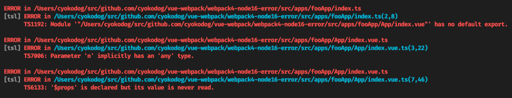
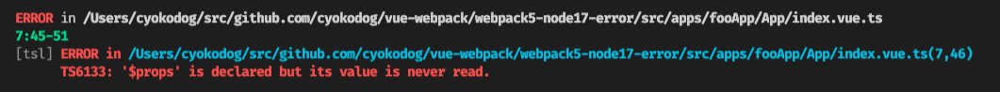

coffee や backbone で構成された 2012 年頃にはじまったプロジェクトに、新しいアプリケーションを追加するという作業を 2018 年頃はじめ、今も継続して機能拡張や新規アプリの追加をしている。
新アプリの導入に際し、元々あった本体アプリとの連携は必要とはいえ、パラメータの受け渡しや、UI の連携がうまく処置できれば OK な要件だったのと、本体側の挙動に不安定な要素があったので、以下構成を採用した。
- ifame を画面いっぱい広げてその中に新アプリ表示（html 要素の背景を transparent で透過にして一体感を出す）
- 本体アプリと新アプリの中継をするアダプターアプリを配置する
- TypeScript、webpack、Vue を採用
- 既存の package.json を利用（<-- これがまずかった）
当時、Node.js は v6 ぐらいだった思うが、この時、新アプリに必要なパッケージも既存の同じ package.json で管理してしまった。
この既存 package.json には、古い Node.js でないと動かないやつがいろいろあったようで、Node.js やパッケージのバージョンアップをしてく過程で、Node.js を v8 以降にあげようとするとインストールでコケるようになってしまった。
そのため、Node.js のバージョンアップできないのにひっぱられ、もろもろの構成パッケージのバージョンアップもできなくなってしまい（ESLint とのからみもあった記憶）、長らく主要パッケージが以下のようなバージョンになってしまっていた。
"dependencies": {
...
"vue": "^3.0.0"
},
"devDependencies": {
...
"@types/jest": "23.1.0",
"@types/node": "10.5.4",
"@vue/compiler-sfc": "^3.0.0",
"css-loader": "^3.4.2",
"file-loader": "^6.0.0",
"jest": "23.1.0",
"node-sass": "4.9.4",
"sass-loader": "7.1.0",
"sass-resources-loader": "1.3.4",
"ts-jest": "22.4.6",
"ts-loader": "^8.0.3",
"typescript": "^4.0.2",
"vue-jest": "^3.0.5",
"vue-loader": "^16.0.0-beta.5",
"vue-style-loader": "4.1.2",
"webpack": "^4.42.1",
"webpack-cli": "^3.3.11",
webpack4 のまま、Node.js、TS、Vue のバージョンを上げる
新アプリ起動は、本体アプリの UI を必ず経由するので、本体アプリ側からみたら新アプリ（というかアダプターアプリ）のビルド結果を script タグで読み込めれば問題ない。
ので、アダプターアプリや新アプリ用に別ディレクトリを切り、そこで専用のpackage.jsonを管理し、ビルド結果のみを本体アプリ側のディレクトリに出力するようにした。
この状態でまずは Node.js を v16 や v17 にしたかったので、インストールでコケないように整合性が取れるにように各パッケージのバージョンを以下のように調整した。
"dependencies": {
...
"vue": "^3.2.36"
},
"devDependencies": {
"@types/jest": "^27.4.1",
"@types/node": "^17.0.25",
"@vue/compiler-sfc": "^3.2.33",
"@vue/vue3-jest": "^27.0.0-alpha.4",
"css-loader": "^3.4.2",
"file-loader": "^6.2.0",
"jest": "^27.5.1",
"sass": "^1.50.1",
"sass-loader": "7.1.0",
"sass-resources-loader": "1.3.4",
"ts-jest": "^27.1.4",
"ts-loader": "^8.0.3",
"typescript": "^4.6.3",
"vue-loader": "^17.0.0",
"vue-style-loader": "4.1.2",
"vue-template-compiler": "^2.7.4",
"webpack": "^4.42.1",
"webpack-cli": "^3.3.11"
webpack についてはとりあえず現状維持で 4 系のままで、TS を 4.6 系、Vue を 3.2 系へ。その他は、インストールでこけないように微妙に古いバージョンになっている。
Node.js が v17.5.0 の場合
この設定で、Node.js が v17.5.0 だと以下エラーがでる。
Error: error:0308010C:digital envelope routines::unsupported
at new Hash (node:internal/crypto/hash:67:19)
at Object.createHash (node:crypto:135:10)
https://qiita.com/cnloni/items/1c83cac956599fb24158 で、解決できるらしいという記事が散見されたが、解消されず。バージョンを、10.12.0 までおとすとエラーはなくなる。
どうもこれは、wabpack の不具合らしく、v5 系では修正対応するが、v4 系では修正はされないらしい。
v4 でも、次のようにexport NODE_OPTIONS=--openssl-legacy-provider;することで、解決できるけどやたらとコンパイル時間が長くなってしまう....
"scripts": {
"build": "export NODE_OPTIONS=--openssl-legacy-provider;webpack --config webpack.fooApp --mode production",
Node.js が v16.14.0 の場合
次に Node.js を v16.14.0 にすると、次のようなエラーが発生する。

いずれも vue ファイルまわりのエラーで、tsconfig との兼ね合いで出てるエラーもある。
$props の never read エラー
どうも Vue のバージョンアップで、SFC の型チェックが厳密？になったらしい...
SFC から参照できる$props等の$うんたらがいろいろ生えてるが、これが未使用というエラーがでている（と言われてもそんなモノ必要としてないし...）。
これは tsconfig のnoUnusedParameters:trueの影響で、参照されていないパラメータ定義があるとエラーを出す。パッケージのバージョン上げれない問題で、ESLint でこのチェックをできないという背景があったため、tsconfig で設定していた（noUnusedLocals:trueも）。
Parameter 'n' impicitly ... エラー
これも SFC の型チェックが変更された影響っぽい。
tsconfig の"strict": trueをやめればでなくなるけど、って issue コメントあるけど、これはなんとかして欲しい....
default export エラー
これがよくわからない。
https://github.com/TypeStrong/ts-loader#appendtssuffixto を参考に、以下のような webpack のローダーの設定でエラーがでなくなった。
module: {
rules: [
{
test: /\.ts$/,
exclude: /node_modules/,
loader: 'ts-loader',
options: {
appendTsSuffixTo: [/TS\.vue$/], // <--- TSっていうをつけるパターン
},
},
が、vue ファイルのみで完結するシンプルなパターンならこれでも動作するが、src インポートしてるとエラーになってしまう。いくら VSCode が賢くなって SFC 上でも型を識別できるようになったとはいえ、個人的に SFC への全部書きは嫌いなのでこれはヤダ。
Webpack5 で Node も v17 にしてその他も最新にする
splitChunksの仕様が Webpack の v4 と v5 で違うので、v5 にするのを避けてたけど、もう面倒なので、一旦、みんな最新にしてどんな問題が出るか見る。
"dependencies": {
"vue": "^3.2.36"
},
"devDependencies": {
"@types/jest": "^28.1.4",
"@types/node": "^18.0.3",
"@vue/compiler-sfc": "^3.2.37",
"css-loader": "^6.7.1",
"file-loader": "^6.2.0",
"jest": "^26.6.3",
"sass": "^1.53.0",
"sass-loader": "^13.0.2",
"sass-resources-loader": "^2.2.5",
"ts-jest": "^26.5.6",
"ts-loader": "^9.3.1",
"typescript": "^4.7.4",
"vue-jest": "^5.0.0-alpha.10",
"vue-loader": "^17.0.0",
"vue-style-loader": "^4.1.3",
"vue-template-compiler": "^2.7.4",
"webpack": "^5.73.0",
"webpack-cli": "^4.10.0"
Node.js は v17.5.0、webpack は v5 系、Vue は 3.2.36、TS は 4.7.4、その他もろもろを最新に。

$props の never read エラーだけになった w
noUnusedParameters:trueやめて、ESLint でチェックすればいけそうだけど、もうちょい原因調査。
さきほどの「Parameter 'n' impicitly ... エラー」の対策として、vue-loader を 16.5 以前にすると解決するというコメントがあった。
試しにこれやってみたら、エラーが完全に消えてコンパイルが通るようになった！バンザイ！（アプリの動作も問題なし、はじめからこうすれば良かった...）
splitChunksまわりの変更や、チャンクファイルの命名が変更された都合でもろもろ修正は必要になったけど、とりあえずこのまま運用してvue-loaderのバグ修正を待つつもり。
- サンプルコード: cyokodog/vue-webpack